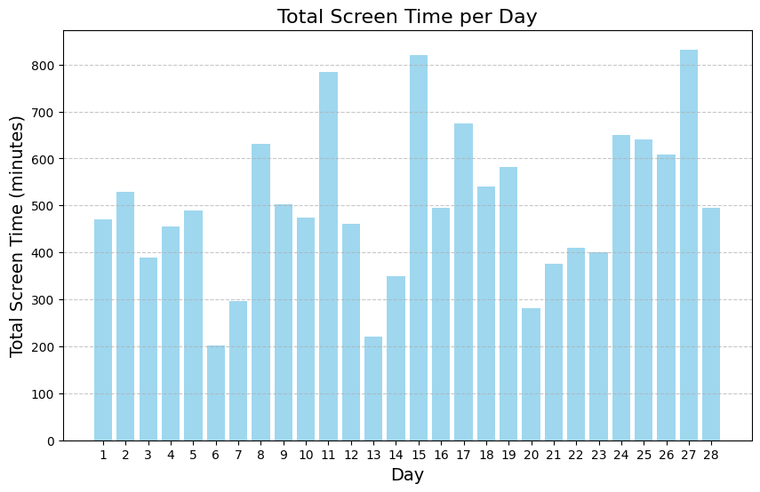
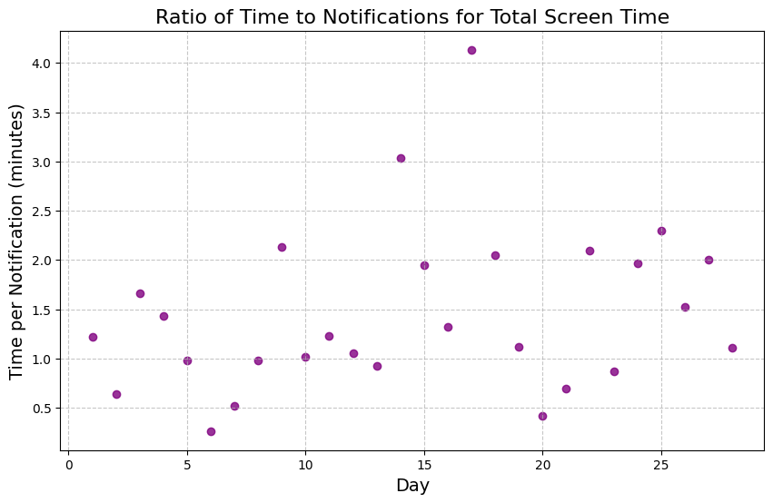
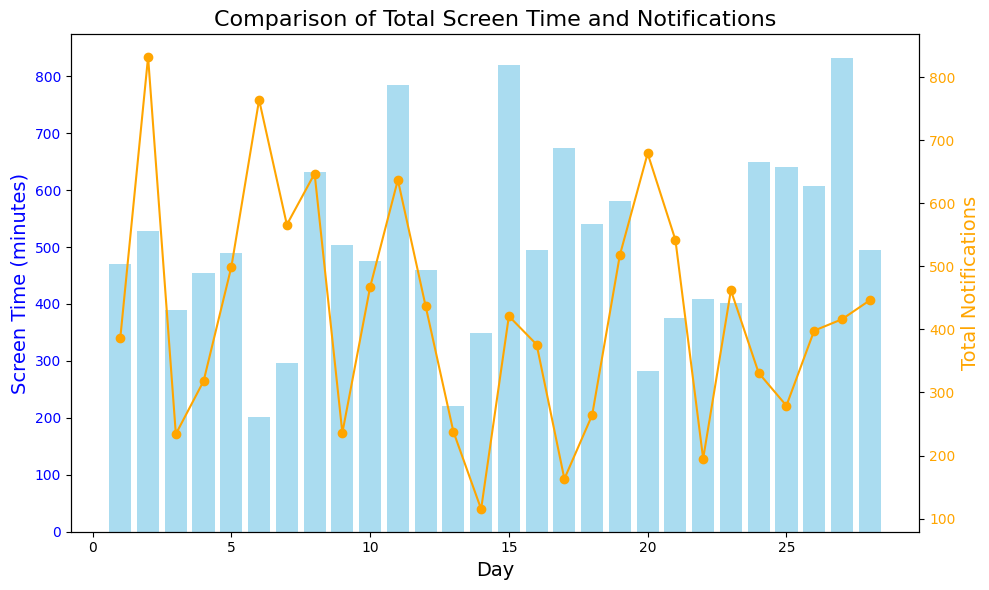
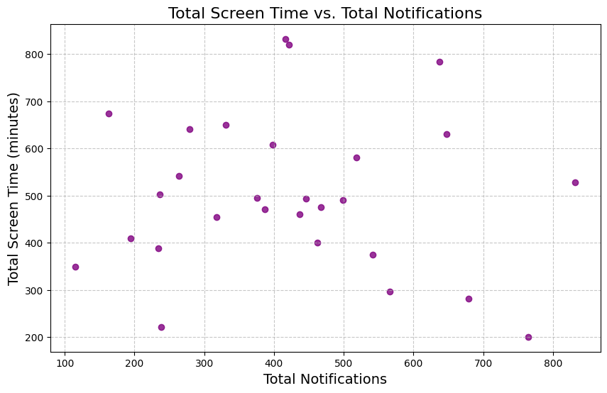
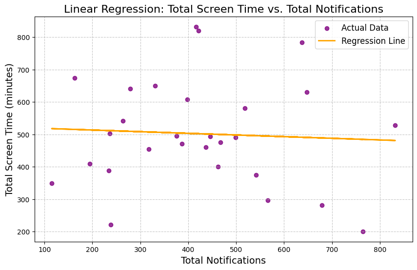

This project explores the relationship between screen time and notifications across different apps.
Below are the key visualizations from our analysis.
  The analysis shows a weak or no correlation between screen time and notifications. Below is the regression analysis:
 Our findings indicate no significant relationship between the number of notifications and the screen time. Further exploration could include additional metrics or broader datasets.